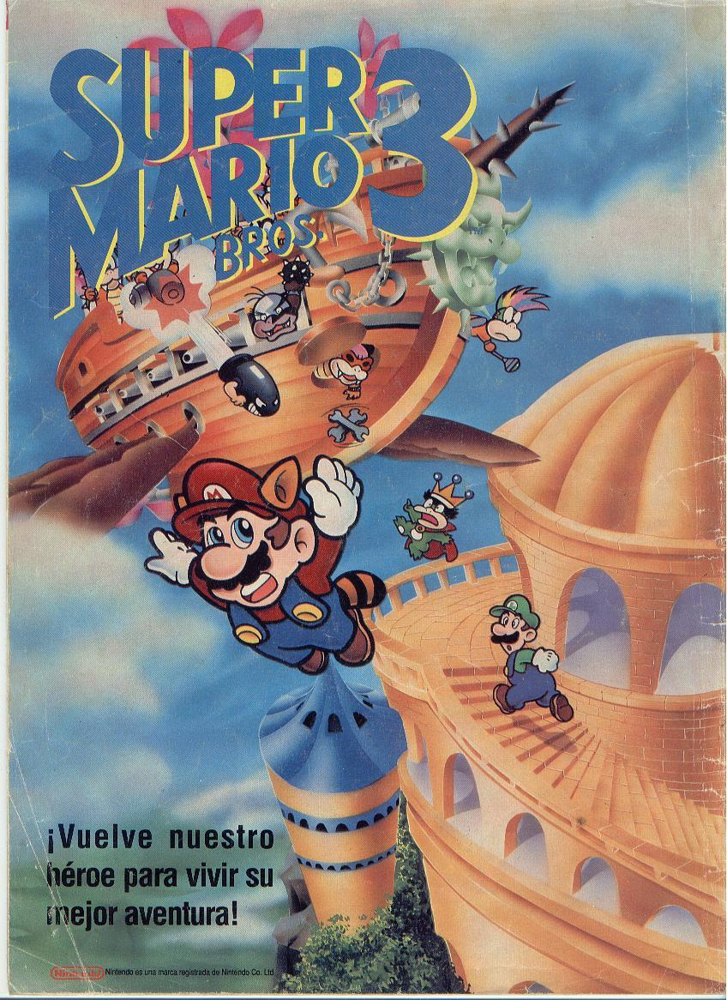
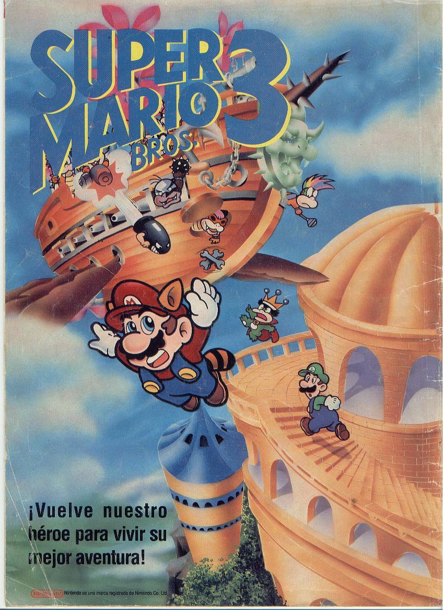

AVATAR
Jake Sully es un ex-marine confinado en una silla de ruedas que, a pesar de su cuerpo tullido, todavía es un guerrero de corazón. Jake ha sido reclutado para viajar a Pandora, donde las corporaciones están extrayendo un mineral extraño que es la clave para resolver los problemas de la crisis energética de la Tierra. Al ser tóxica la atmósfera de Pandora, ellos han creado el programa Avatar, en el cual los humanos ¿conductores¿ tienen sus conciencias unidas a un avatar, un cuerpo biológico controlado de forma remota que puede sobrevivir en el aire letal. Estos cuerpos están creados genéticamente de ADN humano, mezclado con ADN de los nativos de Pandora ¿ los Na'vi. Ya en su forma avatar, Jake puede caminar otra vez. Ha recibido la misión de infiltrarse entre los Na'vi, los cuales se han convertido en el mayor obstáculo para la extracción del mineral. Pero una bella Na'vi, Naytiri, salva la vida de Jake, y todo cambia. Jake es admitido en su clan y aprende a ser uno de ellos, lo cual le hace someterse a muchas pruebas y aventuras. Según la relación de Jake con su profesora Neytiry se va intensificando, él aprende a respetar la vida de los Na'vi y decide encontrar su lugar entre ellos. Pronto se enfrentará a la mayor de las pruebas cuando tenga que dirigir una batalla épica que decidirá nada menos que el destino de su nuevo mundo.
 
